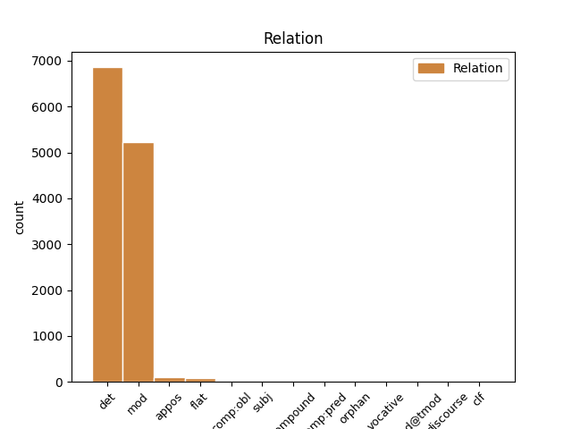
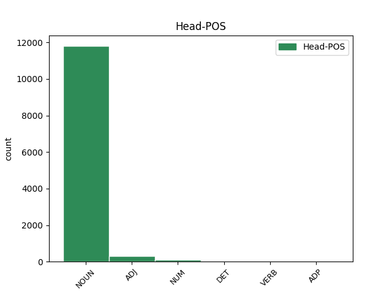
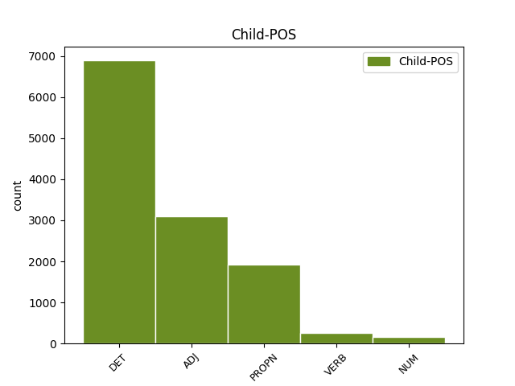

Distribution of features within this leaf



Agreement Rules sorted by frequency.
- When the dependent token is the determiner(det) of the head token, and the head token is NOUN and the dependent token is DET.
1 Care _ _ _ _ 0 _ _ _
2 s _ _ _ _ 0 _ _ _
3 -au _ _ _ _ 0 _ _ _
4 întărit _ _ _ _ 0 _ _ _
5 și _ _ _ _ 0 _ _ _
6 de _ _ _ _ 0 _ _ _
7 Domnia _ _ _ _ 0 _ _ _
8 mea _ _ _ _ 0 _ _ _
9 legiuindu _ _ _ _ 0 _ _ _
10 -să _ _ _ _ 0 _ _ _
11 și _ _ _ _ 0 _ _ _
12 aceaste _ _ _ _ 0 _ _ _
13 Ponturi _ _ _ _ 0 _ _ _
14 , _ _ _ _ 0 _ _ _
15 adăogat _ _ _ _ 0 _ _ _
16 în _ _ _ _ 0 _ _ _
17 pravela _ _ _ _ 0 _ _ _
18 pămîntului _ _ _ _ 0 _ _ _
19 , _ _ _ _ 0 _ _ _
20 supt _ _ _ _ 0 _ _ _
21 peceatea _ _ _ _ 0 _ _ _
22 Domnii _ _ _ _ 0 _ _ _
23 meale _ _ _ _ 0 _ _ _
24 precum _ _ _ _ 0 _ _ _
25 să _ _ _ _ 0 _ _ _
26 arată _ _ _ _ 0 _ _ _
27 mai _ _ _ _ 0 _ _ _
28 sus _ _ _ _ 0 _ _ _
29 , _ _ _ _ 0 _ _ _
30 care _ _ _ _ 0 _ _ _
31 s _ _ _ _ 0 _ _ _
32 -au _ _ _ _ 0 _ _ _
33 și _ _ _ _ 0 _ _ _
34 publicarisit _ _ _ _ 0 _ _ _
35 prin _ _ _ _ 0 _ _ _
36 toate _ _ _ _ 0 _ _ _
37 Judecătoriile _ _ _ _ 0 _ _ _
38 din _ _ _ _ 0 _ _ _
39 Domneasca _ _ _ _ 0 _ _ _
40 noastră _ _ _ _ 0 _ _ _
41 Ţară _ _ _ _ 0 _ _ _
42 , _ _ _ _ 0 _ _ _
43 și _ _ _ _ 0 _ _ _
44 cătră _ _ _ _ 0 _ _ _
45 toți tot DET Di3mpr Case=Acc,Nom|Gender=Masc|Number=Plur|Person=3|PronType=Ind 46 det _ ref=COMPLETARE.10
46 lăcuitorii locuitor NOUN Ncmpry Case=Acc,Nom|Definite=Def|Gender=Masc|Number=Plur 0 _ _ _
47 de _ _ _ _ 0 _ _ _
48 obște _ _ _ _ 0 _ _ _
49 ca _ _ _ _ 0 _ _ _
50 să _ _ _ _ 0 _ _ _
51 fie _ _ _ _ 0 _ _ _
52 știute _ _ _ _ 0 _ _ _
53 și _ _ _ _ 0 _ _ _
54 să _ _ _ _ 0 _ _ _
55 se _ _ _ _ 0 _ _ _
56 urmeaze _ _ _ _ 0 _ _ _
57 făr _ _ _ _ 0 _ _ _
58 de _ _ _ _ 0 _ _ _
59 strămutare _ _ _ _ 0 _ _ _
60 . _ _ _ _ 0 _ _ _
1 Care _ _ _ _ 0 _ _ _
2 s _ _ _ _ 0 _ _ _
3 -au _ _ _ _ 0 _ _ _
4 întărit _ _ _ _ 0 _ _ _
5 și _ _ _ _ 0 _ _ _
6 de _ _ _ _ 0 _ _ _
7 Domnia _ _ _ _ 0 _ _ _
8 mea _ _ _ _ 0 _ _ _
9 legiuindu _ _ _ _ 0 _ _ _
10 -să _ _ _ _ 0 _ _ _
11 și _ _ _ _ 0 _ _ _
12 aceaste _ _ _ _ 0 _ _ _
13 Ponturi _ _ _ _ 0 _ _ _
14 , _ _ _ _ 0 _ _ _
15 adăogat _ _ _ _ 0 _ _ _
16 în _ _ _ _ 0 _ _ _
17 pravela _ _ _ _ 0 _ _ _
18 pămîntului _ _ _ _ 0 _ _ _
19 , _ _ _ _ 0 _ _ _
20 supt _ _ _ _ 0 _ _ _
21 peceatea _ _ _ _ 0 _ _ _
22 Domnii _ _ _ _ 0 _ _ _
23 meale _ _ _ _ 0 _ _ _
24 precum _ _ _ _ 0 _ _ _
25 să _ _ _ _ 0 _ _ _
26 arată _ _ _ _ 0 _ _ _
27 mai _ _ _ _ 0 _ _ _
28 sus _ _ _ _ 0 _ _ _
29 , _ _ _ _ 0 _ _ _
30 care _ _ _ _ 0 _ _ _
31 s _ _ _ _ 0 _ _ _
32 -au _ _ _ _ 0 _ _ _
33 și _ _ _ _ 0 _ _ _
34 publicarisit _ _ _ _ 0 _ _ _
35 prin _ _ _ _ 0 _ _ _
36 toate _ _ _ _ 0 _ _ _
37 Judecătoriile _ _ _ _ 0 _ _ _
38 din _ _ _ _ 0 _ _ _
39 Domneasca domnesc ADJ Afpfsry Case=Acc,Nom|Definite=Def|Degree=Pos|Gender=Fem|Number=Sing 41 mod _ ref=COMPLETARE.10
40 noastră _ _ _ _ 0 _ _ _
41 Ţară țară NOUN Ncfsrn Case=Acc,Nom|Definite=Ind|Gender=Fem|Number=Sing 0 _ _ _
42 , _ _ _ _ 0 _ _ _
43 și _ _ _ _ 0 _ _ _
44 cătră _ _ _ _ 0 _ _ _
45 toți _ _ _ _ 0 _ _ _
46 lăcuitorii _ _ _ _ 0 _ _ _
47 de _ _ _ _ 0 _ _ _
48 obște _ _ _ _ 0 _ _ _
49 ca _ _ _ _ 0 _ _ _
50 să _ _ _ _ 0 _ _ _
51 fie _ _ _ _ 0 _ _ _
52 știute _ _ _ _ 0 _ _ _
53 și _ _ _ _ 0 _ _ _
54 să _ _ _ _ 0 _ _ _
55 se _ _ _ _ 0 _ _ _
56 urmeaze _ _ _ _ 0 _ _ _
57 făr _ _ _ _ 0 _ _ _
58 de _ _ _ _ 0 _ _ _
59 strămutare _ _ _ _ 0 _ _ _
60 . _ _ _ _ 0 _ _ _
1 Să _ _ _ _ 0 _ _ _
2 dea _ _ _ _ 0 _ _ _
3 clăcașul _ _ _ _ 0 _ _ _
4 la _ _ _ _ 0 _ _ _
5 stăpînul _ _ _ _ 0 _ _ _
6 moșii _ _ _ _ 0 _ _ _
7 o _ _ _ _ 0 _ _ _
8 găină _ _ _ _ 0 _ _ _
9 de _ _ _ _ 0 _ _ _
10 Crăciun _ _ _ _ 0 _ _ _
11 și _ _ _ _ 0 _ _ _
12 un _ _ _ _ 0 _ _ _
13 puiu _ _ _ _ 0 _ _ _
14 de _ _ _ _ 0 _ _ _
15 găină _ _ _ _ 0 _ _ _
16 de _ _ _ _ 0 _ _ _
17 sînt sfânt NOUN Ncmsrn Case=Acc,Nom|Definite=Ind|Gender=Masc|Number=Sing 0 _ _ _
18 Pietru Petru PROPN Npmsry Case=Acc,Nom|Definite=Def|Gender=Masc|Number=Sing 17 mod _ ref=COMPLETARE.7
19 ce _ _ _ _ 0 _ _ _
20 sînt _ _ _ _ 0 _ _ _
21 obicinuite _ _ _ _ 0 _ _ _
22 , _ _ _ _ 0 _ _ _
23 făr _ _ _ _ 0 _ _ _
24 de _ _ _ _ 0 _ _ _
25 a _ _ _ _ 0 _ _ _
26 fi _ _ _ _ 0 _ _ _
27 volnic _ _ _ _ 0 _ _ _
28 acel _ _ _ _ 0 _ _ _
29 stăpîn _ _ _ _ 0 _ _ _
30 de _ _ _ _ 0 _ _ _
31 a _ _ _ _ 0 _ _ _
32 ceare _ _ _ _ 0 _ _ _
33 să _ _ _ _ 0 _ _ _
34 i _ _ _ _ 0 _ _ _
35 le _ _ _ _ 0 _ _ _
36 plătească _ _ _ _ 0 _ _ _
37 clăcașii _ _ _ _ 0 _ _ _
38 în _ _ _ _ 0 _ _ _
39 bani _ _ _ _ 0 _ _ _
40 , _ _ _ _ 0 _ _ _
41 ci _ _ _ _ 0 _ _ _
42 să _ _ _ _ 0 _ _ _
43 le _ _ _ _ 0 _ _ _
44 priimească _ _ _ _ 0 _ _ _
45 în _ _ _ _ 0 _ _ _
46 natură _ _ _ _ 0 _ _ _
47 . _ _ _ _ 0 _ _ _
1 Din _ _ _ _ 0 _ _ _
2 Luminată lumina VERB Vmp--sf-p--r Case=Acc,Nom|Gender=Fem|Number=Sing|Polarity=Pos|VerbForm=Part 3 mod _ ref=ANAFORA.3
3 poruncă poruncă NOUN Ncfsrn Case=Acc,Nom|Definite=Ind|Gender=Fem|Number=Sing 0 _ _ _
4 a _ _ _ _ 0 _ _ _
5 Mării _ _ _ _ 0 _ _ _
6 sale _ _ _ _ 0 _ _ _
7 Prea _ _ _ _ 0 _ _ _
8 Înălțatului _ _ _ _ 0 _ _ _
9 nostru _ _ _ _ 0 _ _ _
10 Domn _ _ _ _ 0 _ _ _
11 Io _ _ _ _ 0 _ _ _
12 Ioann _ _ _ _ 0 _ _ _
13 Gheorghie _ _ _ _ 0 _ _ _
14 Caragea _ _ _ _ 0 _ _ _
15 , _ _ _ _ 0 _ _ _
16 Vv _ _ _ _ 0 _ _ _
17 . _ _ _ _ 0 _ _ _
1 Judecătorii _ _ _ _ 0 _ _ _
2 înaintea _ _ _ _ 0 _ _ _
3 judecății _ _ _ _ 0 _ _ _
4 și _ _ _ _ 0 _ _ _
5 hotărîrii _ _ _ _ 0 _ _ _
6 să _ _ _ _ 0 _ _ _
7 nu _ _ _ _ 0 _ _ _
8 facă _ _ _ _ 0 _ _ _
9 secvestru _ _ _ _ 0 _ _ _
10 lucruri _ _ _ _ 0 _ _ _
11 de _ _ _ _ 0 _ _ _
12 ale al DET Tsfpr Case=Acc,Nom|Gender=Fem|Number=Plur|Poss=Yes|PronType=Art 14 det _ ref=PART_V_CAP_3.7
13 celui _ _ _ _ 0 _ _ _
14 datoriu dator ADJ Afpmsrn Case=Acc,Nom|Definite=Ind|Degree=Pos|Gender=Masc|Number=Sing 0 _ _ _
15 pentru _ _ _ _ 0 _ _ _
16 datorie _ _ _ _ 0 _ _ _
17 , _ _ _ _ 0 _ _ _
18 afară _ _ _ _ 0 _ _ _
19 numai _ _ _ _ 0 _ _ _
20 cînd _ _ _ _ 0 _ _ _
21 împrumutătoriul _ _ _ _ 0 _ _ _
22 va _ _ _ _ 0 _ _ _
23 da _ _ _ _ 0 _ _ _
24 chezași _ _ _ _ 0 _ _ _
25 , _ _ _ _ 0 _ _ _
26 sau _ _ _ _ 0 _ _ _
27 va _ _ _ _ 0 _ _ _
28 pune _ _ _ _ 0 _ _ _
29 zălog _ _ _ _ 0 _ _ _
30 cu _ _ _ _ 0 _ _ _
31 legătură _ _ _ _ 0 _ _ _
32 ca _ _ _ _ 0 _ _ _
33 de _ _ _ _ 0 _ _ _
34 să _ _ _ _ 0 _ _ _
35 va _ _ _ _ 0 _ _ _
36 dovedi _ _ _ _ 0 _ _ _
37 după _ _ _ _ 0 _ _ _
38 judecată _ _ _ _ 0 _ _ _
39 secvestru _ _ _ _ 0 _ _ _
40 drept _ _ _ _ 0 _ _ _
41 cuvînt _ _ _ _ 0 _ _ _
42 , _ _ _ _ 0 _ _ _
43 să _ _ _ _ 0 _ _ _
44 fie _ _ _ _ 0 _ _ _
45 bine _ _ _ _ 0 _ _ _
46 făcut _ _ _ _ 0 _ _ _
47 , _ _ _ _ 0 _ _ _
48 iară _ _ _ _ 0 _ _ _
49 de _ _ _ _ 0 _ _ _
50 nu _ _ _ _ 0 _ _ _
51 , _ _ _ _ 0 _ _ _
52 să _ _ _ _ 0 _ _ _
53 răspunză _ _ _ _ 0 _ _ _
54 celui _ _ _ _ 0 _ _ _
55 datoriu _ _ _ _ 0 _ _ _
56 , _ _ _ _ 0 _ _ _
57 cîtă _ _ _ _ 0 _ _ _
58 pagubă _ _ _ _ 0 _ _ _
59 cu _ _ _ _ 0 _ _ _
60 nedreptate _ _ _ _ 0 _ _ _
61 i _ _ _ _ 0 _ _ _
62 s _ _ _ _ 0 _ _ _
63 -au _ _ _ _ 0 _ _ _
64 pricinuit _ _ _ _ 0 _ _ _
65 cu _ _ _ _ 0 _ _ _
66 secvestru _ _ _ _ 0 _ _ _
67 . _ _ _ _ 0 _ _ _
1 Cîți _ _ _ _ 0 _ _ _
2 din _ _ _ _ 0 _ _ _
3 cei _ _ _ _ 0 _ _ _
4 ce _ _ _ _ 0 _ _ _
5 au _ _ _ _ 0 _ _ _
6 pricină _ _ _ _ 0 _ _ _
7 de _ _ _ _ 0 _ _ _
8 judecată _ _ _ _ 0 _ _ _
9 , _ _ _ _ 0 _ _ _
10 chemîndu- _ _ _ _ 0 _ _ _
11 să _ _ _ _ 0 _ _ _
12 în _ _ _ _ 0 _ _ _
13 doao doi NUM Mcfprln Case=Acc,Nom|Definite=Ind|Gender=Fem|Number=Plur|NumForm=Word|NumType=Card 14 mod _ ref=PART_V_CAP_4.4
14 rănduri rănduri NOUN Ncfprn Case=Acc,Nom|Definite=Ind|Gender=Fem|Number=Plur 0 _ _ _
15 de _ _ _ _ 0 _ _ _
16 cătră _ _ _ _ 0 _ _ _
17 judecători _ _ _ _ 0 _ _ _
18 , _ _ _ _ 0 _ _ _
19 nu _ _ _ _ 0 _ _ _
20 vor _ _ _ _ 0 _ _ _
21 veni _ _ _ _ 0 _ _ _
22 , _ _ _ _ 0 _ _ _
23 și _ _ _ _ 0 _ _ _
24 să _ _ _ _ 0 _ _ _
25 vor _ _ _ _ 0 _ _ _
26 osîndi _ _ _ _ 0 _ _ _
27 , _ _ _ _ 0 _ _ _
28 aceia _ _ _ _ 0 _ _ _
29 nu _ _ _ _ 0 _ _ _
30 pot _ _ _ _ 0 _ _ _
31 porni _ _ _ _ 0 _ _ _
32 Apellație _ _ _ _ 0 _ _ _
33 . _ _ _ _ 0 _ _ _
1 Cine _ _ _ _ 0 _ _ _
2 va _ _ _ _ 0 _ _ _
3 pierde _ _ _ _ 0 _ _ _
4 la _ _ _ _ 0 _ _ _
5 a al DET Tsfsr Case=Acc,Nom|Gender=Fem|Number=Sing|Poss=Yes|PronType=Art 6 det _ ref=PART_V_CAP_3.14
6 doao doi NUM Mofsrly Case=Acc,Nom|Definite=Def|Gender=Fem|Number=Sing|NumForm=Word|NumType=Ord 0 _ _ _
7 cercetare _ _ _ _ 0 _ _ _
8 de _ _ _ _ 0 _ _ _
9 o _ _ _ _ 0 _ _ _
10 hotărâre _ _ _ _ 0 _ _ _
11 domnească _ _ _ _ 0 _ _ _
12 a _ _ _ _ 0 _ _ _
13 vreunui _ _ _ _ 0 _ _ _
14 domn _ _ _ _ 0 _ _ _
15 de _ _ _ _ 0 _ _ _
16 mai _ _ _ _ 0 _ _ _
17 nainte _ _ _ _ 0 _ _ _
18 , _ _ _ _ 0 _ _ _
19 acela _ _ _ _ 0 _ _ _
20 să _ _ _ _ 0 _ _ _
21 plătească _ _ _ _ 0 _ _ _
22 protivnicului _ _ _ _ 0 _ _ _
23 său _ _ _ _ 0 _ _ _
24 și _ _ _ _ 0 _ _ _
25 cheltuiala _ _ _ _ 0 _ _ _
26 judecății _ _ _ _ 0 _ _ _
27 . _ _ _ _ 0 _ _ _
1 Adecă _ _ _ _ 0 _ _ _
2 cînd _ _ _ _ 0 _ _ _
3 o _ _ _ _ 0 _ _ _
4 parte _ _ _ _ 0 _ _ _
5 din _ _ _ _ 0 _ _ _
6 ceale _ _ _ _ 0 _ _ _
7 prigonitoare _ _ _ _ 0 _ _ _
8 , _ _ _ _ 0 _ _ _
9 Petru _ _ _ _ 0 _ _ _
10 zice _ _ _ _ 0 _ _ _
11 , _ _ _ _ 0 _ _ _
12 că _ _ _ _ 0 _ _ _
13 -i _ _ _ _ 0 _ _ _
14 e _ _ _ _ 0 _ _ _
15 datoriu _ _ _ _ 0 _ _ _
16 ceialaltă _ _ _ _ 0 _ _ _
17 parte parte NOUN Ncfsrn Case=Acc,Nom|Definite=Ind|Gender=Fem|Number=Sing 0 _ _ _
18 , _ _ _ _ 0 _ _ _
19 Pavel Pavel PROPN Npmsrn Case=Acc,Nom|Definite=Ind|Gender=Masc|Number=Sing 17 appos _ ref=PART_V_CAP_2c.45b|SpaceAfter=No
20 , _ _ _ _ 0 _ _ _
21 și _ _ _ _ 0 _ _ _
22 el _ _ _ _ 0 _ _ _
23 tăgăduiaște _ _ _ _ 0 _ _ _
24 , _ _ _ _ 0 _ _ _
25 iară _ _ _ _ 0 _ _ _
26 Petru _ _ _ _ 0 _ _ _
27 n- _ _ _ _ 0 _ _ _
28 are _ _ _ _ 0 _ _ _
29 altă _ _ _ _ 0 _ _ _
30 dovadă _ _ _ _ 0 _ _ _
31 decît _ _ _ _ 0 _ _ _
32 un _ _ _ _ 0 _ _ _
33 martor _ _ _ _ 0 _ _ _
34 singur _ _ _ _ 0 _ _ _
35 ( _ _ _ _ 0 _ _ _
36 care _ _ _ _ 0 _ _ _
37 deși _ _ _ _ 0 _ _ _
38 nu _ _ _ _ 0 _ _ _
39 dovedeaște _ _ _ _ 0 _ _ _
40 fără _ _ _ _ 0 _ _ _
41 de _ _ _ _ 0 _ _ _
42 îndoială _ _ _ _ 0 _ _ _
43 dar _ _ _ _ 0 _ _ _
44 bănuială _ _ _ _ 0 _ _ _
45 dă _ _ _ _ 0 _ _ _
46 ) _ _ _ _ 0 _ _ _
47 , _ _ _ _ 0 _ _ _
48 atunci _ _ _ _ 0 _ _ _
49 să _ _ _ _ 0 _ _ _
50 provliseaște _ _ _ _ 0 _ _ _
51 jurămînt _ _ _ _ 0 _ _ _
52 lui _ _ _ _ 0 _ _ _
53 Pavel _ _ _ _ 0 _ _ _
54 . _ _ _ _ 0 _ _ _
1 Sfântul _ _ _ _ 0 _ _ _
2 Petru _ _ _ _ 0 _ _ _
3 și _ _ _ _ 0 _ _ _
4 Mihai _ _ _ _ 0 _ _ _
5 Au _ _ _ _ 0 _ _ _
6 făcut _ _ _ _ 0 _ _ _
7 o _ _ _ _ 0 _ _ _
8 crâșmă _ _ _ _ 0 _ _ _
9 -n _ _ _ _ 0 _ _ _
10 rai _ _ _ _ 0 _ _ _
11 , _ _ _ _ 0 _ _ _
12 Şi _ _ _ _ 0 _ _ _
13 dacă _ _ _ _ 0 _ _ _
14 vrei _ _ _ _ 0 _ _ _
15 să _ _ _ _ 0 _ _ _
16 beai _ _ _ _ 0 _ _ _
17 Hai _ _ _ _ 0 _ _ _
18 cu _ _ _ _ 0 _ _ _
19 noi _ _ _ _ 0 _ _ _
20 la _ _ _ _ 0 _ _ _
21 sfânt sfânt NOUN Ncmsrn Case=Acc,Nom|Definite=Ind|Gender=Masc|Number=Sing 0 _ _ _
22 Mihai Mihai PROPN Npmsrn Case=Acc,Nom|Definite=Ind|Gender=Masc|Number=Sing 21 flat _ Rhyme=10,16,ID4|SpaceAfter=No|Type=Mono
23 ! _ _ _ _ 0 _ _ _
1 Cine _ _ _ _ 0 _ _ _
2 va _ _ _ _ 0 _ _ _
3 arăta _ _ _ _ 0 _ _ _
4 copie _ _ _ _ 0 _ _ _
5 de _ _ _ _ 0 _ _ _
6 carte _ _ _ _ 0 _ _ _
7 , _ _ _ _ 0 _ _ _
8 iaste _ _ _ _ 0 _ _ _
9 datoriu _ _ _ _ 0 _ _ _
10 cînd _ _ _ _ 0 _ _ _
11 i _ _ _ _ 0 _ _ _
12 să _ _ _ _ 0 _ _ _
13 va _ _ _ _ 0 _ _ _
14 cere _ _ _ _ 0 _ _ _
15 să _ _ _ _ 0 _ _ _
16 scoață _ _ _ _ 0 _ _ _
17 și _ _ _ _ 0 _ _ _
18 pre _ _ _ _ 0 _ _ _
19 cea cel DET Tdfsr Case=Acc,Nom|Gender=Fem|Number=Sing|PronType=Dem 20 det _ ref=PART_V_CAP_2a.29
20 adevărată adevăra VERB Vmp--sf-p--r Case=Acc,Nom|Gender=Fem|Number=Sing|Polarity=Pos|VerbForm=Part 0 _ _ _
21 , _ _ _ _ 0 _ _ _
22 sau _ _ _ _ 0 _ _ _
23 îndată _ _ _ _ 0 _ _ _
24 avîndu _ _ _ _ 0 _ _ _
25 -o _ _ _ _ 0 _ _ _
26 la _ _ _ _ 0 _ _ _
27 îndemână _ _ _ _ 0 _ _ _
28 , _ _ _ _ 0 _ _ _
29 sau _ _ _ _ 0 _ _ _
30 cu _ _ _ _ 0 _ _ _
31 soroc _ _ _ _ 0 _ _ _
32 de _ _ _ _ 0 _ _ _
33 nu _ _ _ _ 0 _ _ _
34 o _ _ _ _ 0 _ _ _
35 va _ _ _ _ 0 _ _ _
36 avea _ _ _ _ 0 _ _ _
37 la _ _ _ _ 0 _ _ _
38 îndemână _ _ _ _ 0 _ _ _
39 . _ _ _ _ 0 _ _ _
1 La _ _ _ _ 0 _ _ _
2 tocmealele _ _ _ _ 0 _ _ _
3 ceale _ _ _ _ 0 _ _ _
4 cu _ _ _ _ 0 _ _ _
5 doao _ _ _ _ 0 _ _ _
6 sume _ _ _ _ 0 _ _ _
7 , _ _ _ _ 0 _ _ _
8 și _ _ _ _ 0 _ _ _
9 cu _ _ _ _ 0 _ _ _
10 doao _ _ _ _ 0 _ _ _
11 vremi _ _ _ _ 0 _ _ _
12 , _ _ _ _ 0 _ _ _
13 priimim _ _ _ _ 0 _ _ _
14 suma _ _ _ _ 0 _ _ _
15 cea cel DET Tdfsr Case=Acc,Nom|Gender=Fem|Number=Sing|PronType=Dem 17 det _ ref=PART_V_CAP_2a.13a
16 mai _ _ _ _ 0 _ _ _
17 puțină puțin DET Di3fsr Case=Acc,Nom|Gender=Fem|Number=Sing|Person=3|PronType=Ind 0 _ _ _
18 , _ _ _ _ 0 _ _ _
19 și _ _ _ _ 0 _ _ _
20 vreamea _ _ _ _ 0 _ _ _
21 cea _ _ _ _ 0 _ _ _
22 mai _ _ _ _ 0 _ _ _
23 îndelungată _ _ _ _ 0 _ _ _
24 . _ _ _ _ 0 _ _ _
1 La _ _ _ _ 0 _ _ _
2 tocmealele _ _ _ _ 0 _ _ _
3 ceale _ _ _ _ 0 _ _ _
4 întunecoase _ _ _ _ 0 _ _ _
5 , _ _ _ _ 0 _ _ _
6 priimim _ _ _ _ 0 _ _ _
7 ceia _ _ _ _ 0 _ _ _
8 ce _ _ _ _ 0 _ _ _
9 iaste _ _ _ _ 0 _ _ _
10 mai _ _ _ _ 0 _ _ _
11 de _ _ _ _ 0 _ _ _
12 crezut _ _ _ _ 0 _ _ _
13 , _ _ _ _ 0 _ _ _
14 sau _ _ _ _ 0 _ _ _
15 ceia _ _ _ _ 0 _ _ _
16 ce _ _ _ _ 0 _ _ _
17 să _ _ _ _ 0 _ _ _
18 face _ _ _ _ 0 _ _ _
19 mai _ _ _ _ 0 _ _ _
20 de _ _ _ _ 0 _ _ _
21 multe mult DET Di3fpr Case=Acc,Nom|Gender=Fem|Number=Plur|Person=3|PronType=Ind 22 mod _ ref=PART_V_CAP_2a.11
22 ori oară NOUN Ncfprn Case=Acc,Nom|Definite=Ind|Gender=Fem|Number=Plur 0 _ _ _
23 . _ _ _ _ 0 _ _ _
1 Să _ _ _ _ 0 _ _ _
2 veri _ _ _ _ 0 _ _ _
3 da _ _ _ _ 0 _ _ _
4 aceastea _ _ _ _ 0 _ _ _
5 înaintea _ _ _ _ 0 _ _ _
6 fraților _ _ _ _ 0 _ _ _
7 , _ _ _ _ 0 _ _ _
8 bună _ _ _ _ 0 _ _ _
9 slugă slugă NOUN Ncfsrn Case=Acc,Nom|Definite=Ind|Gender=Fem|Number=Sing 0 _ _ _
10 veri _ _ _ _ 0 _ _ _
11 fi _ _ _ _ 0 _ _ _
12 lui _ _ _ _ 0 _ _ _
13 Iisus Iisus PROPN Npmsrn Case=Acc,Nom|Definite=Ind|Gender=Masc|Number=Sing 9 comp:obl _ ref=PAVEL_TIM.1_4.6
14 Hristos _ _ _ _ 0 _ _ _
15 , _ _ _ _ 0 _ _ _
16 crescut _ _ _ _ 0 _ _ _
17 în _ _ _ _ 0 _ _ _
18 cuvintele _ _ _ _ 0 _ _ _
19 credințeei _ _ _ _ 0 _ _ _
20 și _ _ _ _ 0 _ _ _
21 învățăturiei _ _ _ _ 0 _ _ _
22 bune _ _ _ _ 0 _ _ _
23 , _ _ _ _ 0 _ _ _
24 după _ _ _ _ 0 _ _ _
25 carea _ _ _ _ 0 _ _ _
26 ai _ _ _ _ 0 _ _ _
27 îmblat _ _ _ _ 0 _ _ _
28 . _ _ _ _ 0 _ _ _
1 Jur _ _ _ _ 0 _ _ _
2 -prejur _ _ _ _ 0 _ _ _
3 de _ _ _ _ 0 _ _ _
4 mese _ _ _ _ 0 _ _ _
5 Stau _ _ _ _ 0 _ _ _
6 în _ _ _ _ 0 _ _ _
7 cete _ _ _ _ 0 _ _ _
8 dese _ _ _ _ 0 _ _ _
9 Sânţi _ _ _ _ 0 _ _ _
10 și _ _ _ _ 0 _ _ _
11 mucenici _ _ _ _ 0 _ _ _
12 , _ _ _ _ 0 _ _ _
13 Mai _ _ _ _ 0 _ _ _
14 mari _ _ _ _ 0 _ _ _
15 și _ _ _ _ 0 _ _ _
16 mai _ _ _ _ 0 _ _ _
17 mici _ _ _ _ 0 _ _ _
18 , _ _ _ _ 0 _ _ _
19 O _ _ _ _ 0 _ _ _
20 sută _ _ _ _ 0 _ _ _
21 și _ _ _ _ 0 _ _ _
22 cinci _ _ _ _ 0 _ _ _
23 ; _ _ _ _ 0 _ _ _
24 Iar _ _ _ _ 0 _ _ _
25 mai _ _ _ _ 0 _ _ _
26 jos _ _ _ _ 0 _ _ _
27 de _ _ _ _ 0 _ _ _
28 ei _ _ _ _ 0 _ _ _
29 , _ _ _ _ 0 _ _ _
30 Sânţi _ _ _ _ 0 _ _ _
31 mai _ _ _ _ 0 _ _ _
32 mărunţei _ _ _ _ 0 _ _ _
33 , _ _ _ _ 0 _ _ _
34 O un NUM Mcfsrln Case=Acc,Nom|Definite=Ind|Gender=Fem|Number=Sing|NumForm=Word|NumType=Card 35 mod _ _
35 sută sută NUM Mcfsrln Case=Acc,Nom|Definite=Ind|Gender=Fem|Number=Sing|NumForm=Word|NumType=Card 0 _ _ _
36 și _ _ _ _ 0 _ _ _
37 trei _ _ _ _ 0 _ _ _
38 . _ _ _ _ 0 _ _ _
1 Bună bun ADJ Afpfsrn Case=Acc,Nom|Definite=Ind|Degree=Pos|Gender=Fem|Number=Sing 2 compound _ _
2 ziua zi NOUN Ncfsry Case=Acc,Nom|Definite=Def|Gender=Fem|Number=Sing 0 _ _ _
3 , _ _ _ _ 0 _ _ _
4 măi _ _ _ _ 0 _ _ _
5 băete _ _ _ _ 0 _ _ _
6 , _ _ _ _ 0 _ _ _
7 Ți- _ _ _ _ 0 _ _ _
8 am _ _ _ _ 0 _ _ _
9 adus _ _ _ _ 0 _ _ _
10 , _ _ _ _ 0 _ _ _
11 un _ _ _ _ 0 _ _ _
12 cârd _ _ _ _ 0 _ _ _
13 de _ _ _ _ 0 _ _ _
14 fete _ _ _ _ 0 _ _ _
15 , _ _ _ _ 0 _ _ _
16 Nu _ _ _ _ 0 _ _ _
17 ți- _ _ _ _ 0 _ _ _
18 am _ _ _ _ 0 _ _ _
19 adus _ _ _ _ 0 _ _ _
20 una _ _ _ _ 0 _ _ _
21 două _ _ _ _ 0 _ _ _
22 , _ _ _ _ 0 _ _ _
23 Cu _ _ _ _ 0 _ _ _
24 Ileana _ _ _ _ 0 _ _ _
25 se _ _ _ _ 0 _ _ _
26 fac _ _ _ _ 0 _ _ _
27 nouă _ _ _ _ 0 _ _ _
28 . _ _ _ _ 0 _ _ _
1 Şi _ _ _ _ 0 _ _ _
2 cum _ _ _ _ 0 _ _ _
3 se _ _ _ _ 0 _ _ _
4 jelea _ _ _ _ 0 _ _ _
5 Şi- _ _ _ _ 0 _ _ _
6 amîndoi _ _ _ _ 0 _ _ _
7 mergea _ _ _ _ 0 _ _ _
8 , _ _ _ _ 0 _ _ _
9 Cuc _ _ _ _ 0 _ _ _
10 pe _ _ _ _ 0 _ _ _
11 sus _ _ _ _ 0 _ _ _
12 cîntînd _ _ _ _ 0 _ _ _
13 , _ _ _ _ 0 _ _ _
14 Ea _ _ _ _ 0 _ _ _
15 pe _ _ _ _ 0 _ _ _
16 jos _ _ _ _ 0 _ _ _
17 plîngînd _ _ _ _ 0 _ _ _
18 , _ _ _ _ 0 _ _ _
19 Ea _ _ _ _ 0 _ _ _
20 iar _ _ _ _ 0 _ _ _
21 începea _ _ _ _ 0 _ _ _
22 , _ _ _ _ 0 _ _ _
23 De _ _ _ _ 0 _ _ _
24 cuc _ _ _ _ 0 _ _ _
25 se _ _ _ _ 0 _ _ _
26 ruga _ _ _ _ 0 _ _ _
27 Şi _ _ _ _ 0 _ _ _
28 se _ _ _ _ 0 _ _ _
29 jeluia _ _ _ _ 0 _ _ _
30 , _ _ _ _ 0 _ _ _
31 Din _ _ _ _ 0 _ _ _
32 gură _ _ _ _ 0 _ _ _
33 -i _ _ _ _ 0 _ _ _
34 zicea _ _ _ _ 0 _ _ _
35 : _ _ _ _ 0 _ _ _
36 Cuculeţule cuculeț NOUN Ncmsvy Case=Voc|Definite=Def|Gender=Masc|Number=Sing 0 _ _ _
37 , _ _ _ _ 0 _ _ _
38 Mititelule mititel ADJ Afpmsvy Case=Voc|Definite=Def|Degree=Pos|Gender=Masc|Number=Sing 36 appos _ SpaceAfter=No
39 . _ _ _ _ 0 _ _ _
1 Şi _ _ _ _ 0 _ _ _
2 Moisi Moise PROPN Npmsrn Case=Acc,Nom|Definite=Ind|Gender=Masc|Number=Sing 6 comp:obl _ ref=PAVEL_EVREI_12.21|SpaceAfter=No
3 , _ _ _ _ 0 _ _ _
4 așia _ _ _ _ 0 _ _ _
5 era _ _ _ _ 0 _ _ _
6 groaznic groaznic ADJ Afpmsrn Case=Acc,Nom|Definite=Ind|Degree=Pos|Gender=Masc|Number=Sing 0 _ _ _
7 ce _ _ _ _ 0 _ _ _
8 i _ _ _ _ 0 _ _ _
9 să _ _ _ _ 0 _ _ _
10 arăta _ _ _ _ 0 _ _ _
11 , _ _ _ _ 0 _ _ _
12 cît _ _ _ _ 0 _ _ _
13 zise _ _ _ _ 0 _ _ _
14 : _ _ _ _ 0 _ _ _
15 " _ _ _ _ 0 _ _ _
16 Spăreatu _ _ _ _ 0 _ _ _
17 -m _ _ _ _ 0 _ _ _
18 -am _ _ _ _ 0 _ _ _
19 și _ _ _ _ 0 _ _ _
20 m- _ _ _ _ 0 _ _ _
21 am _ _ _ _ 0 _ _ _
22 cutremurat _ _ _ _ 0 _ _ _
23 " _ _ _ _ 0 _ _ _
24 . _ _ _ _ 0 _ _ _
1 Mama _ _ _ _ 0 _ _ _
2 a _ _ _ _ 0 _ _ _
3 sosit _ _ _ _ 0 _ _ _
4 Pe _ _ _ _ 0 _ _ _
5 fiu _ _ _ _ 0 _ _ _
6 a _ _ _ _ 0 _ _ _
7 -ntrebat _ _ _ _ 0 _ _ _
8 : _ _ _ _ 0 _ _ _
9 Miorică _ _ _ _ 0 _ _ _
10 lae laie ADJ Afpfsrn Case=Acc,Nom|Definite=Ind|Degree=Pos|Gender=Fem|Number=Sing 0 _ _ _
11 , _ _ _ _ 0 _ _ _
12 Lae lae ADJ Afpfsrn Case=Acc,Nom|Definite=Ind|Degree=Pos|Gender=Fem|Number=Sing 10 appos _ Rhyme=13,ID10|Type=Mono
13 bucălae _ _ _ _ 0 _ _ _
14 , _ _ _ _ 0 _ _ _
15 Cu _ _ _ _ 0 _ _ _
16 lâna _ _ _ _ 0 _ _ _
17 plăvăoară _ _ _ _ 0 _ _ _
18 , _ _ _ _ 0 _ _ _
19 N- _ _ _ _ 0 _ _ _
20 ai _ _ _ _ 0 _ _ _
21 văzut _ _ _ _ 0 _ _ _
22 Mândru _ _ _ _ 0 _ _ _
23 ciobănaș _ _ _ _ 0 _ _ _
24 : _ _ _ _ 0 _ _ _
25 Fețișoara _ _ _ _ 0 _ _ _
26 lui _ _ _ _ 0 _ _ _
27 Spuma _ _ _ _ 0 _ _ _
28 laptelui _ _ _ _ 0 _ _ _
29 ; _ _ _ _ 0 _ _ _
30 Ochișorii _ _ _ _ 0 _ _ _
31 lui _ _ _ _ 0 _ _ _
32 Mura _ _ _ _ 0 _ _ _
33 câmpului _ _ _ _ 0 _ _ _
34 ; _ _ _ _ 0 _ _ _
35 Mustecioara _ _ _ _ 0 _ _ _
36 lui _ _ _ _ 0 _ _ _
37 Spicul _ _ _ _ 0 _ _ _
38 grâului _ _ _ _ 0 _ _ _
39 ? _ _ _ _ 0 _ _ _
1 Toate _ _ _ _ 0 _ _ _
2 diețile _ _ _ _ 0 _ _ _
3 ( _ _ _ _ 0 _ _ _
4 de _ _ _ _ 0 _ _ _
5 nu _ _ _ _ 0 _ _ _
6 vor _ _ _ _ 0 _ _ _
7 fi _ _ _ _ 0 _ _ _
8 scrise _ _ _ _ 0 _ _ _
9 de _ _ _ _ 0 _ _ _
10 tot _ _ _ _ 0 _ _ _
11 de _ _ _ _ 0 _ _ _
12 însuși _ _ _ _ 0 _ _ _
13 cei _ _ _ _ 0 _ _ _
14 ce _ _ _ _ 0 _ _ _
15 le _ _ _ _ 0 _ _ _
16 fac _ _ _ _ 0 _ _ _
17 ) _ _ _ _ 0 _ _ _
18 să _ _ _ _ 0 _ _ _
19 să _ _ _ _ 0 _ _ _
20 iscălească _ _ _ _ 0 _ _ _
21 de _ _ _ _ 0 _ _ _
22 cei _ _ _ _ 0 _ _ _
23 ce _ _ _ _ 0 _ _ _
24 le _ _ _ _ 0 _ _ _
25 fac _ _ _ _ 0 _ _ _
26 , _ _ _ _ 0 _ _ _
27 și _ _ _ _ 0 _ _ _
28 să _ _ _ _ 0 _ _ _
29 să _ _ _ _ 0 _ _ _
30 adevereaze _ _ _ _ 0 _ _ _
31 cu _ _ _ _ 0 _ _ _
32 trei _ _ _ _ 0 _ _ _
33 martori _ _ _ _ 0 _ _ _
34 singuri singur ADJ Afpmprn Case=Acc,Nom|Definite=Ind|Degree=Pos|Gender=Masc|Number=Plur 35 comp:pred _ ref=PART_V_CAP_2a.7
35 văzători văzător ADJ Afpmprn Case=Acc,Nom|Definite=Ind|Degree=Pos|Gender=Masc|Number=Plur 0 _ _ _
36 , _ _ _ _ 0 _ _ _
37 sau _ _ _ _ 0 _ _ _
38 singuri _ _ _ _ 0 _ _ _
39 auzitori _ _ _ _ 0 _ _ _
40 , _ _ _ _ 0 _ _ _
41 sau _ _ _ _ 0 _ _ _
42 de _ _ _ _ 0 _ _ _
43 Arhiereul _ _ _ _ 0 _ _ _
44 locului _ _ _ _ 0 _ _ _
45 , _ _ _ _ 0 _ _ _
46 sau _ _ _ _ 0 _ _ _
47 de _ _ _ _ 0 _ _ _
48 judecătoriu _ _ _ _ 0 _ _ _
49 . _ _ _ _ 0 _ _ _
1 Venalie Venalie PROPN Npmsrn Case=Acc,Nom|Definite=Ind|Gender=Masc|Number=Sing 2 subj _ _
2 dzise zice NOUN Ncfprn Case=Acc,Nom|Definite=Ind|Gender=Fem|Number=Plur 0 _ _ _
3 : _ _ _ _ 0 _ _ _
4 " _ _ _ _ 0 _ _ _
5 Pizma _ _ _ _ 0 _ _ _
6 nu _ _ _ _ 0 _ _ _
7 e _ _ _ _ 0 _ _ _
8 nemica _ _ _ _ 0 _ _ _
9 liubovului _ _ _ _ 0 _ _ _
10 , _ _ _ _ 0 _ _ _
11 sireci _ _ _ _ 0 _ _ _
12 n- _ _ _ _ 0 _ _ _
13 are _ _ _ _ 0 _ _ _
14 meastec _ _ _ _ 0 _ _ _
15 " _ _ _ _ 0 _ _ _
16 . _ _ _ _ 0 _ _ _
1 Ptolomei _ _ _ _ 0 _ _ _
2 dzise _ _ _ _ 0 _ _ _
3 : _ _ _ _ 0 _ _ _
4 " _ _ _ _ 0 _ _ _
5 Cine _ _ _ _ 0 _ _ _
6 va _ _ _ _ 0 _ _ _
7 să _ _ _ _ 0 _ _ _
8 -și _ _ _ _ 0 _ _ _
9 bată _ _ _ _ 0 _ _ _
10 joc _ _ _ _ 0 _ _ _
11 de _ _ _ _ 0 _ _ _
12 reale rău ADJ Afpfprn Case=Acc,Nom|Definite=Ind|Degree=Pos|Gender=Fem|Number=Plur 13 mod _ _
13 patime -patimă ADJ Afpfprn Case=Acc,Nom|Definite=Ind|Degree=Pos|Gender=Fem|Number=Plur 0 _ _ _
14 ale _ _ _ _ 0 _ _ _
15 lumiei _ _ _ _ 0 _ _ _
16 aceștiia _ _ _ _ 0 _ _ _
17 , _ _ _ _ 0 _ _ _
18 el _ _ _ _ 0 _ _ _
19 să _ _ _ _ 0 _ _ _
20 se _ _ _ _ 0 _ _ _
21 însoțească _ _ _ _ 0 _ _ _
22 cu _ _ _ _ 0 _ _ _
23 milostenia _ _ _ _ 0 _ _ _
24 și _ _ _ _ 0 _ _ _
25 cu _ _ _ _ 0 _ _ _
26 tărpeanie _ _ _ _ 0 _ _ _
27 " _ _ _ _ 0 _ _ _
28 . _ _ _ _ 0 _ _ _
1 Toate _ _ _ _ 0 _ _ _
2 diețile _ _ _ _ 0 _ _ _
3 ( _ _ _ _ 0 _ _ _
4 de _ _ _ _ 0 _ _ _
5 nu _ _ _ _ 0 _ _ _
6 vor _ _ _ _ 0 _ _ _
7 fi _ _ _ _ 0 _ _ _
8 scrise _ _ _ _ 0 _ _ _
9 de _ _ _ _ 0 _ _ _
10 tot _ _ _ _ 0 _ _ _
11 de _ _ _ _ 0 _ _ _
12 însuși _ _ _ _ 0 _ _ _
13 cei _ _ _ _ 0 _ _ _
14 ce _ _ _ _ 0 _ _ _
15 le _ _ _ _ 0 _ _ _
16 fac _ _ _ _ 0 _ _ _
17 ) _ _ _ _ 0 _ _ _
18 să _ _ _ _ 0 _ _ _
19 să _ _ _ _ 0 _ _ _
20 iscălească _ _ _ _ 0 _ _ _
21 de _ _ _ _ 0 _ _ _
22 cei _ _ _ _ 0 _ _ _
23 ce _ _ _ _ 0 _ _ _
24 le _ _ _ _ 0 _ _ _
25 fac _ _ _ _ 0 _ _ _
26 , _ _ _ _ 0 _ _ _
27 și _ _ _ _ 0 _ _ _
28 să _ _ _ _ 0 _ _ _
29 să _ _ _ _ 0 _ _ _
30 adevereaze _ _ _ _ 0 _ _ _
31 cu _ _ _ _ 0 _ _ _
32 trei _ _ _ _ 0 _ _ _
33 martori _ _ _ _ 0 _ _ _
34 singuri _ _ _ _ 0 _ _ _
35 văzători _ _ _ _ 0 _ _ _
36 , _ _ _ _ 0 _ _ _
37 sau _ _ _ _ 0 _ _ _
38 singuri singur ADJ Afpmprn Case=Acc,Nom|Definite=Ind|Degree=Pos|Gender=Masc|Number=Plur 39 comp:pred _ ref=PART_V_CAP_2a.7
39 auzitori auzitor NOUN Ncmprn Case=Acc,Nom|Definite=Ind|Gender=Masc|Number=Plur 0 _ _ _
40 , _ _ _ _ 0 _ _ _
41 sau _ _ _ _ 0 _ _ _
42 de _ _ _ _ 0 _ _ _
43 Arhiereul _ _ _ _ 0 _ _ _
44 locului _ _ _ _ 0 _ _ _
45 , _ _ _ _ 0 _ _ _
46 sau _ _ _ _ 0 _ _ _
47 de _ _ _ _ 0 _ _ _
48 judecătoriu _ _ _ _ 0 _ _ _
49 . _ _ _ _ 0 _ _ _
1 Şi _ _ _ _ 0 _ _ _
2 atunce _ _ _ _ 0 _ _ _
3 văzu _ _ _ _ 0 _ _ _
4 călugărița _ _ _ _ 0 _ _ _
5 că _ _ _ _ 0 _ _ _
6 nu _ _ _ _ 0 _ _ _
7 o _ _ _ _ 0 _ _ _
8 mai _ _ _ _ 0 _ _ _
9 lasă _ _ _ _ 0 _ _ _
10 , _ _ _ _ 0 _ _ _
11 să _ _ _ _ 0 _ _ _
12 -i _ _ _ _ 0 _ _ _
13 fie _ _ _ _ 0 _ _ _
14 milă _ _ _ _ 0 _ _ _
15 de _ _ _ _ 0 _ _ _
16 dinsa _ _ _ _ 0 _ _ _
17 , _ _ _ _ 0 _ _ _
18 ca _ _ _ _ 0 _ _ _
19 să _ _ _ _ 0 _ _ _
20 nu _ _ _ _ 0 _ _ _
21 -i _ _ _ _ 0 _ _ _
22 spurce _ _ _ _ 0 _ _ _
23 curățiia _ _ _ _ 0 _ _ _
24 , _ _ _ _ 0 _ _ _
25 căce _ _ _ _ 0 _ _ _
26 era _ _ _ _ 0 _ _ _
27 plecată pleca VERB Vmp--sf-p--r Case=Acc,Nom|Gender=Fem|Number=Sing|Polarity=Pos|VerbForm=Part 0 _ _ _
28 lu _ _ _ _ 0 _ _ _
29 Dumnezeu Dumnezeu PROPN Npmsrn Case=Acc,Nom|Definite=Ind|Gender=Masc|Number=Sing 27 comp:obl _ SpaceAfter=No
30 ; _ _ _ _ 0 _ _ _
31 el _ _ _ _ 0 _ _ _
32 nu _ _ _ _ 0 _ _ _
33 mai _ _ _ _ 0 _ _ _
34 vru _ _ _ _ 0 _ _ _
35 să _ _ _ _ 0 _ _ _
36 o _ _ _ _ 0 _ _ _
37 lase _ _ _ _ 0 _ _ _
38 , _ _ _ _ 0 _ _ _
39 atunce _ _ _ _ 0 _ _ _
40 zise _ _ _ _ 0 _ _ _
41 ea _ _ _ _ 0 _ _ _
42 împăratului _ _ _ _ 0 _ _ _
43 : _ _ _ _ 0 _ _ _
44 " _ _ _ _ 0 _ _ _
45 Că _ _ _ _ 0 _ _ _
46 ce _ _ _ _ 0 _ _ _
47 făcuși _ _ _ _ 0 _ _ _
48 mine _ _ _ _ 0 _ _ _
49 mai _ _ _ _ 0 _ _ _
50 asupră _ _ _ _ 0 _ _ _
51 decît _ _ _ _ 0 _ _ _
52 cu _ _ _ _ 0 _ _ _
53 alalte _ _ _ _ 0 _ _ _
54 călugărițe _ _ _ _ 0 _ _ _
55 ale _ _ _ _ 0 _ _ _
56 mănăstirei _ _ _ _ 0 _ _ _
57 ? _ _ _ _ 0 _ _ _
58 " _ _ _ _ 0 _ _ _
1 Trece _ _ _ _ 0 _ _ _
2 mândra _ _ _ _ 0 _ _ _
3 Murășu _ _ _ _ 0 _ _ _
4 , _ _ _ _ 0 _ _ _
5 și _ _ _ _ 0 _ _ _
6 mă _ _ _ _ 0 _ _ _
7 uscă _ _ _ _ 0 _ _ _
8 cu _ _ _ _ 0 _ _ _
9 doru _ _ _ _ 0 _ _ _
10 , _ _ _ _ 0 _ _ _
11 ca _ _ _ _ 0 _ _ _
12 și _ _ _ _ 0 _ _ _
13 soarele soare NOUN Ncmsry Case=Acc,Nom|Definite=Def|Gender=Masc|Number=Sing 0 _ _ _
14 fânu fânu ADJ Afpmsrn Case=Acc,Nom|Definite=Ind|Degree=Pos|Gender=Masc|Number=Sing 13 orphan _ Rhyme=9,ID3|SpaceAfter=No|Type=Mono
15 . _ _ _ _ 0 _ _ _
1 Ce _ _ _ _ 0 _ _ _
2 luaiu _ _ _ _ 0 _ _ _
3 toate _ _ _ _ 0 _ _ _
4 și _ _ _ _ 0 _ _ _
5 prisosescu _ _ _ _ 0 _ _ _
6 : _ _ _ _ 0 _ _ _
7 împluiu _ _ _ _ 0 _ _ _
8 -mă _ _ _ _ 0 _ _ _
9 , _ _ _ _ 0 _ _ _
10 luîndu _ _ _ _ 0 _ _ _
11 de _ _ _ _ 0 _ _ _
12 la _ _ _ _ 0 _ _ _
13 Epafrodit _ _ _ _ 0 _ _ _
14 carele _ _ _ _ 0 _ _ _
15 -s _ _ _ _ 0 _ _ _
16 tremiase _ _ _ _ 0 _ _ _
17 de _ _ _ _ 0 _ _ _
18 la _ _ _ _ 0 _ _ _
19 voi _ _ _ _ 0 _ _ _
20 , _ _ _ _ 0 _ _ _
21 mirodeniia _ _ _ _ 0 _ _ _
22 a _ _ _ _ 0 _ _ _
23 bunei _ _ _ _ 0 _ _ _
24 miroseale _ _ _ _ 0 _ _ _
25 , _ _ _ _ 0 _ _ _
26 jărtvă _ _ _ _ 0 _ _ _
27 priimită _ _ _ _ 0 _ _ _
28 și _ _ _ _ 0 _ _ _
29 dragă drag ADJ Afpfsrn Case=Acc,Nom|Definite=Ind|Degree=Pos|Gender=Fem|Number=Sing 0 _ _ _
30 lui _ _ _ _ 0 _ _ _
31 Dumnezău Dumnezeu PROPN Npmsrn Case=Acc,Nom|Definite=Ind|Gender=Masc|Number=Sing 29 mod _ ref=PAVEL_FILIP_4.18|SpaceAfter=No
32 . _ _ _ _ 0 _ _ _
1 Şi _ _ _ _ 0 _ _ _
2 acei _ _ _ _ 0 _ _ _
3 4 _ _ _ _ 0 _ _ _
4 viețuitori _ _ _ _ 0 _ _ _
5 avea _ _ _ _ 0 _ _ _
6 tot _ _ _ _ 0 _ _ _
7 însul _ _ _ _ 0 _ _ _
8 pregiur _ _ _ _ 0 _ _ _
9 sine _ _ _ _ 0 _ _ _
10 6 _ _ _ _ 0 _ _ _
11 arepi _ _ _ _ 0 _ _ _
12 ; _ _ _ _ 0 _ _ _
13 și _ _ _ _ 0 _ _ _
14 dinlăuntru _ _ _ _ 0 _ _ _
15 -s _ _ _ _ 0 _ _ _
16 plini _ _ _ _ 0 _ _ _
17 de _ _ _ _ 0 _ _ _
18 ochi _ _ _ _ 0 _ _ _
19 și _ _ _ _ 0 _ _ _
20 încetare _ _ _ _ 0 _ _ _
21 nu _ _ _ _ 0 _ _ _
22 avea _ _ _ _ 0 _ _ _
23 zuoa _ _ _ _ 0 _ _ _
24 și _ _ _ _ 0 _ _ _
25 noaptea _ _ _ _ 0 _ _ _
26 zicînd _ _ _ _ 0 _ _ _
27 : _ _ _ _ 0 _ _ _
28 " _ _ _ _ 0 _ _ _
29 Sfînt sfânt ADJ Afpmsrn Case=Acc,Nom|Definite=Ind|Degree=Pos|Gender=Masc|Number=Sing 0 _ _ _
30 , _ _ _ _ 0 _ _ _
31 sfînt _ _ _ _ 0 _ _ _
32 , _ _ _ _ 0 _ _ _
33 sfînt _ _ _ _ 0 _ _ _
34 Dumnezăul Dumnezeu PROPN Npmsry Case=Acc,Nom|Definite=Def|Gender=Masc|Number=Sing 29 subj _ ref=IOAN_APOC_4.8
35 Atotputearnicul _ _ _ _ 0 _ _ _
36 , _ _ _ _ 0 _ _ _
37 carele _ _ _ _ 0 _ _ _
38 era _ _ _ _ 0 _ _ _
39 și _ _ _ _ 0 _ _ _
40 iaste _ _ _ _ 0 _ _ _
41 și _ _ _ _ 0 _ _ _
42 carele _ _ _ _ 0 _ _ _
43 -i _ _ _ _ 0 _ _ _
44 viitoriu _ _ _ _ 0 _ _ _
45 " _ _ _ _ 0 _ _ _
46 . _ _ _ _ 0 _ _ _
1 Numai _ _ _ _ 0 _ _ _
2 țiganii _ _ _ _ 0 _ _ _
3 , _ _ _ _ 0 _ _ _
4 dobitoacele _ _ _ _ 0 _ _ _
5 , _ _ _ _ 0 _ _ _
6 și _ _ _ _ 0 _ _ _
7 toate tot DET Di3fpr Case=Acc,Nom|Gender=Fem|Number=Plur|Person=3|PronType=Ind 0 _ _ _
8 ceale _ _ _ _ 0 _ _ _
9 nemișcătoare nemișcător ADJ Afpfprn Case=Acc,Nom|Definite=Ind|Degree=Pos|Gender=Fem|Number=Plur 7 mod _ ref=PART_III_CAP_16b.27
10 neprețuite _ _ _ _ 0 _ _ _
11 să _ _ _ _ 0 _ _ _
12 să _ _ _ _ 0 _ _ _
13 dea _ _ _ _ 0 _ _ _
14 . _ _ _ _ 0 _ _ _
1 Iară _ _ _ _ 0 _ _ _
2 Irod _ _ _ _ 0 _ _ _
3 al _ _ _ _ 0 _ _ _
4 patrulea patru NUM Moms-l Case=Acc,Nom|Definite=Def|Gender=Masc|Number=Sing 5 mod _ ref=LUCA3.19
5 biruitoriu biruitor ADJ Afpmsrn Case=Acc,Nom|Definite=Ind|Degree=Pos|Gender=Masc|Number=Sing 0 _ _ _
6 , _ _ _ _ 0 _ _ _
7 fiind _ _ _ _ 0 _ _ _
8 certat _ _ _ _ 0 _ _ _
9 de _ _ _ _ 0 _ _ _
10 el _ _ _ _ 0 _ _ _
11 pentru _ _ _ _ 0 _ _ _
12 Irodiada _ _ _ _ 0 _ _ _
13 , _ _ _ _ 0 _ _ _
14 muiarea _ _ _ _ 0 _ _ _
15 lui _ _ _ _ 0 _ _ _
16 Filip _ _ _ _ 0 _ _ _
17 frate _ _ _ _ 0 _ _ _
18 -său _ _ _ _ 0 _ _ _
19 , _ _ _ _ 0 _ _ _
20 și _ _ _ _ 0 _ _ _
21 pentru _ _ _ _ 0 _ _ _
22 toate _ _ _ _ 0 _ _ _
23 realele _ _ _ _ 0 _ _ _
24 care _ _ _ _ 0 _ _ _
25 făcuse _ _ _ _ 0 _ _ _
26 Irod _ _ _ _ 0 _ _ _
27 . _ _ _ _ 0 _ _ _
1 Şi _ _ _ _ 0 _ _ _
2 porunci _ _ _ _ 0 _ _ _
3 să _ _ _ _ 0 _ _ _
4 stea _ _ _ _ 0 _ _ _
5 carul _ _ _ _ 0 _ _ _
6 și _ _ _ _ 0 _ _ _
7 să _ _ _ _ 0 _ _ _
8 pogorîră _ _ _ _ 0 _ _ _
9 amîndoi amândoi NUM Mlmpr Case=Acc,Nom|Gender=Masc|Number=Plur|NumType=Card|PronType=Tot 0 _ _ _
10 în _ _ _ _ 0 _ _ _
11 apă _ _ _ _ 0 _ _ _
12 , _ _ _ _ 0 _ _ _
13 adecă _ _ _ _ 0 _ _ _
14 Filipp Filip PROPN Npmsrn Case=Acc,Nom|Definite=Ind|Gender=Masc|Number=Sing 9 appos _ ref=ACTS_8.38
15 și _ _ _ _ 0 _ _ _
16 vistiiarnicul _ _ _ _ 0 _ _ _
17 , _ _ _ _ 0 _ _ _
18 și _ _ _ _ 0 _ _ _
19 -l _ _ _ _ 0 _ _ _
20 boteză _ _ _ _ 0 _ _ _
21 pre _ _ _ _ 0 _ _ _
22 el _ _ _ _ 0 _ _ _
23 . _ _ _ _ 0 _ _ _
1 Iară _ _ _ _ 0 _ _ _
2 șăzînd _ _ _ _ 0 _ _ _
3 un _ _ _ _ 0 _ _ _
4 voinic _ _ _ _ 0 _ _ _
5 tinăr tinăr ADJ Afpmsrn Case=Acc,Nom|Definite=Ind|Degree=Pos|Gender=Masc|Number=Sing 0 _ _ _
6 , _ _ _ _ 0 _ _ _
7 anume _ _ _ _ 0 _ _ _
8 Evtih Evtih PROPN Npmsrn Case=Acc,Nom|Definite=Ind|Gender=Masc|Number=Sing 5 appos _ ref=ACTS_20.9|SpaceAfter=No
9 , _ _ _ _ 0 _ _ _
10 într- _ _ _ _ 0 _ _ _
11 o _ _ _ _ 0 _ _ _
12 fereastră _ _ _ _ 0 _ _ _
13 , _ _ _ _ 0 _ _ _
14 îngreuiat _ _ _ _ 0 _ _ _
15 de _ _ _ _ 0 _ _ _
16 somnu _ _ _ _ 0 _ _ _
17 , _ _ _ _ 0 _ _ _
18 povestind _ _ _ _ 0 _ _ _
19 Pavel _ _ _ _ 0 _ _ _
20 multă _ _ _ _ 0 _ _ _
21 vreame _ _ _ _ 0 _ _ _
22 , _ _ _ _ 0 _ _ _
23 cebăluit _ _ _ _ 0 _ _ _
24 de _ _ _ _ 0 _ _ _
25 somnu _ _ _ _ 0 _ _ _
26 căzu _ _ _ _ 0 _ _ _
27 denn _ _ _ _ 0 _ _ _
28 al _ _ _ _ 0 _ _ _
29 treile _ _ _ _ 0 _ _ _
30 rînd _ _ _ _ 0 _ _ _
31 de _ _ _ _ 0 _ _ _
32 casă _ _ _ _ 0 _ _ _
33 , _ _ _ _ 0 _ _ _
34 gios _ _ _ _ 0 _ _ _
35 , _ _ _ _ 0 _ _ _
36 și _ _ _ _ 0 _ _ _
37 -l _ _ _ _ 0 _ _ _
38 luară _ _ _ _ 0 _ _ _
39 mort _ _ _ _ 0 _ _ _
40 . _ _ _ _ 0 _ _ _
1 Pătru Petru PROPN Npmsrn Case=Acc,Nom|Definite=Ind|Gender=Masc|Number=Sing 10 subj _ ref=IACOB_PRED.40
2 de _ _ _ _ 0 _ _ _
3 multe _ _ _ _ 0 _ _ _
4 capete _ _ _ _ 0 _ _ _
5 a _ _ _ _ 0 _ _ _
6 credinței _ _ _ _ 0 _ _ _
7 numai _ _ _ _ 0 _ _ _
8 de _ _ _ _ 0 _ _ _
9 grabă _ _ _ _ 0 _ _ _
10 scrisă scrie VERB Vmp--sf-p--r Case=Acc,Nom|Gender=Fem|Number=Sing|Polarity=Pos|VerbForm=Part 0 _ _ _
11 ; _ _ _ _ 0 _ _ _
12 iară _ _ _ _ 0 _ _ _
13 pre _ _ _ _ 0 _ _ _
14 jidovii _ _ _ _ 0 _ _ _
15 credincioși _ _ _ _ 0 _ _ _
16 cu _ _ _ _ 0 _ _ _
17 multe _ _ _ _ 0 _ _ _
18 cuvinte _ _ _ _ 0 _ _ _
19 -i _ _ _ _ 0 _ _ _
20 dojeneaște _ _ _ _ 0 _ _ _
21 și _ _ _ _ 0 _ _ _
22 -i _ _ _ _ 0 _ _ _
23 învață _ _ _ _ 0 _ _ _
24 spre _ _ _ _ 0 _ _ _
25 viiața _ _ _ _ 0 _ _ _
26 creștinească _ _ _ _ 0 _ _ _
27 și _ _ _ _ 0 _ _ _
28 spre _ _ _ _ 0 _ _ _
29 tăriia _ _ _ _ 0 _ _ _
30 credinției _ _ _ _ 0 _ _ _
31 , _ _ _ _ 0 _ _ _
32 să _ _ _ _ 0 _ _ _
33 stea _ _ _ _ 0 _ _ _
34 vîrtos _ _ _ _ 0 _ _ _
35 împrotiva _ _ _ _ 0 _ _ _
36 învățătorilor _ _ _ _ 0 _ _ _
37 minciunoși _ _ _ _ 0 _ _ _
38 , _ _ _ _ 0 _ _ _
39 așia _ _ _ _ 0 _ _ _
40 și _ _ _ _ 0 _ _ _
41 Ioan _ _ _ _ 0 _ _ _
42 apostol _ _ _ _ 0 _ _ _
43 , _ _ _ _ 0 _ _ _
44 carele _ _ _ _ 0 _ _ _
45 în _ _ _ _ 0 _ _ _
46 carte _ _ _ _ 0 _ _ _
47 de _ _ _ _ 0 _ _ _
48 primă _ _ _ _ 0 _ _ _
49 pre _ _ _ _ 0 _ _ _
50 spre _ _ _ _ 0 _ _ _
51 tot _ _ _ _ 0 _ _ _
52 , _ _ _ _ 0 _ _ _
53 numai _ _ _ _ 0 _ _ _
54 ce _ _ _ _ 0 _ _ _
55 scrie _ _ _ _ 0 _ _ _
56 de _ _ _ _ 0 _ _ _
57 dragoste _ _ _ _ 0 _ _ _
58 lui _ _ _ _ 0 _ _ _
59 Dumnezău _ _ _ _ 0 _ _ _
60 și _ _ _ _ 0 _ _ _
61 a _ _ _ _ 0 _ _ _
62 priiatenilor _ _ _ _ 0 _ _ _
63 noștri _ _ _ _ 0 _ _ _
64 . _ _ _ _ 0 _ _ _
1 Pentr- _ _ _ _ 0 _ _ _
2 aceaia _ _ _ _ 0 _ _ _
3 să _ _ _ _ 0 _ _ _
4 huliia _ _ _ _ 0 _ _ _
5 numele nume NOUN Ncmsry Case=Acc,Nom|Definite=Def|Gender=Masc|Number=Sing 0 _ _ _
6 lui _ _ _ _ 0 _ _ _
7 Dumnezău Dumnezeu PROPN Npmsrn Case=Acc,Nom|Definite=Ind|Gender=Masc|Number=Sing 5 mod@tmod _ ref=IOAN.1_PRED.60
8 între _ _ _ _ 0 _ _ _
9 ei _ _ _ _ 0 _ _ _
10 ; _ _ _ _ 0 _ _ _
11 văzînd _ _ _ _ 0 _ _ _
12 aceastia _ _ _ _ 0 _ _ _
13 le _ _ _ _ 0 _ _ _
14 scrie _ _ _ _ 0 _ _ _
15 împrotivă _ _ _ _ 0 _ _ _
16 și _ _ _ _ 0 _ _ _
17 le _ _ _ _ 0 _ _ _
18 arată _ _ _ _ 0 _ _ _
19 că _ _ _ _ 0 _ _ _
20 nu _ _ _ _ 0 _ _ _
21 poate _ _ _ _ 0 _ _ _
22 fi _ _ _ _ 0 _ _ _
23 cine _ _ _ _ 0 _ _ _
24 are _ _ _ _ 0 _ _ _
25 împreunare _ _ _ _ 0 _ _ _
26 cu _ _ _ _ 0 _ _ _
27 Dumnezău _ _ _ _ 0 _ _ _
28 în _ _ _ _ 0 _ _ _
29 lumina _ _ _ _ 0 _ _ _
30 credințeei _ _ _ _ 0 _ _ _
31 , _ _ _ _ 0 _ _ _
32 să _ _ _ _ 0 _ _ _
33 n- _ _ _ _ 0 _ _ _
34 aibă _ _ _ _ 0 _ _ _
35 viiață _ _ _ _ 0 _ _ _
36 sfîntă _ _ _ _ 0 _ _ _
37 și _ _ _ _ 0 _ _ _
38 fapte _ _ _ _ 0 _ _ _
39 bune _ _ _ _ 0 _ _ _
40 . _ _ _ _ 0 _ _ _
1 Ce _ _ _ _ 0 _ _ _
2 încă _ _ _ _ 0 _ _ _
3 împrotivă _ _ _ _ 0 _ _ _
4 , _ _ _ _ 0 _ _ _
5 văzînd _ _ _ _ 0 _ _ _
6 că _ _ _ _ 0 _ _ _
7 e _ _ _ _ 0 _ _ _
8 încrezută încrede VERB Vmp--sf-p--r Case=Acc,Nom|Gender=Fem|Number=Sing|Polarity=Pos|VerbForm=Part 0 _ _ _
9 mie mie NUM Mcfsrln Case=Acc,Nom|Definite=Ind|Gender=Fem|Number=Sing|NumForm=Word|NumType=Card 8 comp:obl _ ref=PAVEL_GALAT_2.7
10 Evangheliia _ _ _ _ 0 _ _ _
11 a _ _ _ _ 0 _ _ _
12 netăerii _ _ _ _ 0 _ _ _
13 , _ _ _ _ 0 _ _ _
14 cum _ _ _ _ 0 _ _ _
15 și _ _ _ _ 0 _ _ _
16 lui _ _ _ _ 0 _ _ _
17 Pătru _ _ _ _ 0 _ _ _
18 , _ _ _ _ 0 _ _ _
19 tăiarea _ _ _ _ 0 _ _ _
20 împregiur _ _ _ _ 0 _ _ _
21 . _ _ _ _ 0 _ _ _
1 Ce _ _ _ _ 0 _ _ _
2 fură _ _ _ _ 0 _ _ _
3 date _ _ _ _ 0 _ _ _
4 muerii _ _ _ _ 0 _ _ _
5 doao _ _ _ _ 0 _ _ _
6 arepi _ _ _ _ 0 _ _ _
7 mari _ _ _ _ 0 _ _ _
8 de _ _ _ _ 0 _ _ _
9 vultur _ _ _ _ 0 _ _ _
10 , _ _ _ _ 0 _ _ _
11 să _ _ _ _ 0 _ _ _
12 sboare _ _ _ _ 0 _ _ _
13 deasupra _ _ _ _ 0 _ _ _
14 șiarpelui _ _ _ _ 0 _ _ _
15 , _ _ _ _ 0 _ _ _
16 în _ _ _ _ 0 _ _ _
17 pustie _ _ _ _ 0 _ _ _
18 în _ _ _ _ 0 _ _ _
19 locul _ _ _ _ 0 _ _ _
20 ei _ _ _ _ 0 _ _ _
21 , _ _ _ _ 0 _ _ _
22 unde _ _ _ _ 0 _ _ _
23 să _ _ _ _ 0 _ _ _
24 să _ _ _ _ 0 _ _ _
25 hrănească _ _ _ _ 0 _ _ _
26 într- _ _ _ _ 0 _ _ _
27 acea _ _ _ _ 0 _ _ _
28 vreame vreme NOUN Ncfsrn Case=Acc,Nom|Definite=Ind|Gender=Fem|Number=Sing 0 _ _ _
29 , _ _ _ _ 0 _ _ _
30 și _ _ _ _ 0 _ _ _
31 în _ _ _ _ 0 _ _ _
32 vremi _ _ _ _ 0 _ _ _
33 și _ _ _ _ 0 _ _ _
34 giumătate jumătate NUM Mffsrln Case=Acc,Nom|Definite=Ind|Gender=Fem|Number=Sing|NumForm=Word|NumType=Frac 28 clf _ ref=IOAN_APOC_12.14
35 de _ _ _ _ 0 _ _ _
36 vreame _ _ _ _ 0 _ _ _
37 . _ _ _ _ 0 _ _ _
1 Bună bun ADJ Afpfsrn Case=Acc,Nom|Definite=Ind|Degree=Pos|Gender=Fem|Number=Sing 2 discourse _ _
2 dimineața dimineața NOUN Ncmsry Case=Acc,Nom|Definite=Def|Gender=Masc|Number=Sing 0 _ _ _
3 , _ _ _ _ 0 _ _ _
4 apă _ _ _ _ 0 _ _ _
5 curgătoare _ _ _ _ 0 _ _ _
6 , _ _ _ _ 0 _ _ _
7 Mulțumesc _ _ _ _ 0 _ _ _
8 , _ _ _ _ 0 _ _ _
9 maică _ _ _ _ 0 _ _ _
10 , _ _ _ _ 0 _ _ _
11 frumoasă _ _ _ _ 0 _ _ _
12 ca _ _ _ _ 0 _ _ _
13 o _ _ _ _ 0 _ _ _
14 floare _ _ _ _ 0 _ _ _
15 . _ _ _ _ 0 _ _ _
1 Iar _ _ _ _ 0 _ _ _
2 voinic voinic ADJ Afpmsrn Case=Acc,Nom|Definite=Ind|Degree=Pos|Gender=Masc|Number=Sing 0 _ _ _
3 Gheorghiță Gheorghiță PROPN Npmsrn Case=Acc,Nom|Definite=Ind|Gender=Masc|Number=Sing 2 flat _ SpaceAfter=No
4 , _ _ _ _ 0 _ _ _
5 Prin _ _ _ _ 0 _ _ _
6 curți _ _ _ _ 0 _ _ _
7 -și _ _ _ _ 0 _ _ _
8 primblând _ _ _ _ 0 _ _ _
9 , _ _ _ _ 0 _ _ _
10 Paloșu _ _ _ _ 0 _ _ _
11 ascuțând _ _ _ _ 0 _ _ _
12 . _ _ _ _ 0 _ _ _
1 Pe- _ _ _ _ 0 _ _ _
2 un _ _ _ _ 0 _ _ _
3 șuvoi _ _ _ _ 0 _ _ _
4 de _ _ _ _ 0 _ _ _
5 ploae _ _ _ _ 0 _ _ _
6 Iată _ _ _ _ 0 _ _ _
7 vin _ _ _ _ 0 _ _ _
8 în _ _ _ _ 0 _ _ _
9 cale _ _ _ _ 0 _ _ _
10 O _ _ _ _ 0 _ _ _
11 turmă _ _ _ _ 0 _ _ _
12 de _ _ _ _ 0 _ _ _
13 mei _ _ _ _ 0 _ _ _
14 Cu _ _ _ _ 0 _ _ _
15 trei _ _ _ _ 0 _ _ _
16 ciobănei ciobănel NOUN Ncmprn Case=Acc,Nom|Definite=Ind|Gender=Masc|Number=Plur 0 _ _ _
17 : _ _ _ _ 0 _ _ _
18 Unu unu NUM Mcmsrl Case=Acc,Nom|Gender=Masc|Number=Sing|NumForm=Word|NumType=Card 16 appos _ _
19 vrâncian _ _ _ _ 0 _ _ _
20 , _ _ _ _ 0 _ _ _
21 Unu _ _ _ _ 0 _ _ _
22 ungurean _ _ _ _ 0 _ _ _
23 , _ _ _ _ 0 _ _ _
24 Unu _ _ _ _ 0 _ _ _
25 moldovan _ _ _ _ 0 _ _ _
26 . _ _ _ _ 0 _ _ _
1 Ceasuri ceas NOUN Ncfprn Case=Acc,Nom|Definite=Ind|Gender=Fem|Number=Plur 0 _ _ _
2 bune _ _ _ _ 0 _ _ _
3 , _ _ _ _ 0 _ _ _
4 măi _ _ _ _ 0 _ _ _
5 Vasile Vasile PROPN Npmsrn Case=Acc,Nom|Definite=Ind|Gender=Masc|Number=Sing 1 vocative _ SpaceAfter=No
6 ! _ _ _ _ 0 _ _ _
Disagree Examples:
1 Și _ _ _ _ 0 _ _ _
2 iaca _ _ _ _ 0 _ _ _
3 veni _ _ _ _ 0 _ _ _
4 unul _ _ _ _ 0 _ _ _
5 den _ _ _ _ 0 _ _ _
6 mai _ _ _ _ 0 _ _ _
7 marii _ _ _ _ 0 _ _ _
8 sinagoghei _ _ _ _ 0 _ _ _
9 ( _ _ _ _ 0 _ _ _
10 a al DET Tsfsr Case=Acc,Nom|Gender=Fem|Number=Sing|Poss=Yes|PronType=Art 11 det _ ref=MARC5.22
11 săborului sobor NOUN Ncmsoy Case=Dat,Gen|Definite=Def|Gender=Masc|Number=Sing 0 _ _ _
12 ) _ _ _ _ 0 _ _ _
13 , _ _ _ _ 0 _ _ _
14 numele _ _ _ _ 0 _ _ _
15 -i _ _ _ _ 0 _ _ _
16 Iair _ _ _ _ 0 _ _ _
17 , _ _ _ _ 0 _ _ _
18 și _ _ _ _ 0 _ _ _
19 văzîndu _ _ _ _ 0 _ _ _
20 -l _ _ _ _ 0 _ _ _
21 pre _ _ _ _ 0 _ _ _
22 El _ _ _ _ 0 _ _ _
23 , _ _ _ _ 0 _ _ _
24 căzu _ _ _ _ 0 _ _ _
25 cătră _ _ _ _ 0 _ _ _
26 picioarele _ _ _ _ 0 _ _ _
27 Lui _ _ _ _ 0 _ _ _
28 . _ _ _ _ 0 _ _ _
1 Giucarea jucare NOUN Ncfsry Case=Acc,Nom|Definite=Def|Gender=Fem|Number=Sing 0 _ _ _
2 Irodii Irodiada PROPN Npfsoy Case=Dat,Gen|Definite=Def|Gender=Fem|Number=Sing 1 mod _ ref=MARC6.22.content|SpaceAfter=No
3 . _ _ _ _ 0 _ _ _
1 Tăierea _ _ _ _ 0 _ _ _
2 capului cap NOUN Ncmsoy Case=Dat,Gen|Definite=Def|Gender=Masc|Number=Sing 0 _ _ _
3 lui _ _ _ _ 0 _ _ _
4 Ioann Ioan PROPN Npmsrn Case=Acc,Nom|Definite=Ind|Gender=Masc|Number=Sing 2 mod _ ref=MARC6.27.content|SpaceAfter=No
5 . _ _ _ _ 0 _ _ _
1 Să _ _ _ _ 0 _ _ _
2 vindecară _ _ _ _ 0 _ _ _
3 bolnavii _ _ _ _ 0 _ _ _
4 cu _ _ _ _ 0 _ _ _
5 atingerea _ _ _ _ 0 _ _ _
6 veșmîntului veșmânt NOUN Ncmsoy Case=Dat,Gen|Definite=Def|Gender=Masc|Number=Sing 0 _ _ _
7 lui _ _ _ _ 0 _ _ _
8 Hristos Hristos PROPN Npmsrn Case=Acc,Nom|Definite=Ind|Gender=Masc|Number=Sing 6 mod _ ref=MARC6.56.content|SpaceAfter=No
9 . _ _ _ _ 0 _ _ _
1 Că _ _ _ _ 0 _ _ _
2 zicea _ _ _ _ 0 _ _ _
3 Ioan _ _ _ _ 0 _ _ _
4 lui -ul DET Tf-so Case=Dat,Gen|Definite=Def|Number=Sing|PronType=Art 5 det _ ref=MARC6.18
5 Irod Irod NOUN Ncmsrn Case=Acc,Nom|Definite=Ind|Gender=Masc|Number=Sing 0 _ _ _
6 că _ _ _ _ 0 _ _ _
7 : _ _ _ _ 0 _ _ _
8 nu _ _ _ _ 0 _ _ _
9 ți _ _ _ _ 0 _ _ _
10 să _ _ _ _ 0 _ _ _
11 cade _ _ _ _ 0 _ _ _
12 să _ _ _ _ 0 _ _ _
13 aibi _ _ _ _ 0 _ _ _
14 pre _ _ _ _ 0 _ _ _
15 muiarea _ _ _ _ 0 _ _ _
16 fratelui _ _ _ _ 0 _ _ _
17 tău _ _ _ _ 0 _ _ _
18 . _ _ _ _ 0 _ _ _